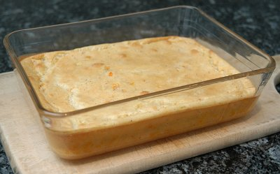

| Zutaten für 4 Personen: | |
| 250 g | Karotten |
| 80 g | Margarine (oder Butter) |
| 100 g | Mehl |
| 7 dl | Milch |
| 1,5 TL | Salz |
| 1 Prise | Muskat |
| 4 | Eier |
Karotten raffeln, in Margarine oder Butter dämpfen.
Mehl darüber streuen, mitdämpfen.
Mit Milch ablöschen. Zu glatter Sauce verrühren, würzen und auskühlen lassen.
Ofen auf 175°C vorheizen.
Eigelb unter die ausgekühlte Masse rühren.
Eiweiss zu steifem Schnee schlagen und sorgfältig darunter ziehen.
In die ungefettete Form (das Soufflé steigt besser) einfüllen und während 50 Minuten - 60 Minuten backen.
Sofort servieren.
Herbert Eigenmann, Code: KAR
Hat geschmeckt. Ergab eine doch eher füllende Beilage. RE 27.9.2009
@LINKBACK_TAG@ @WAKELOCK@